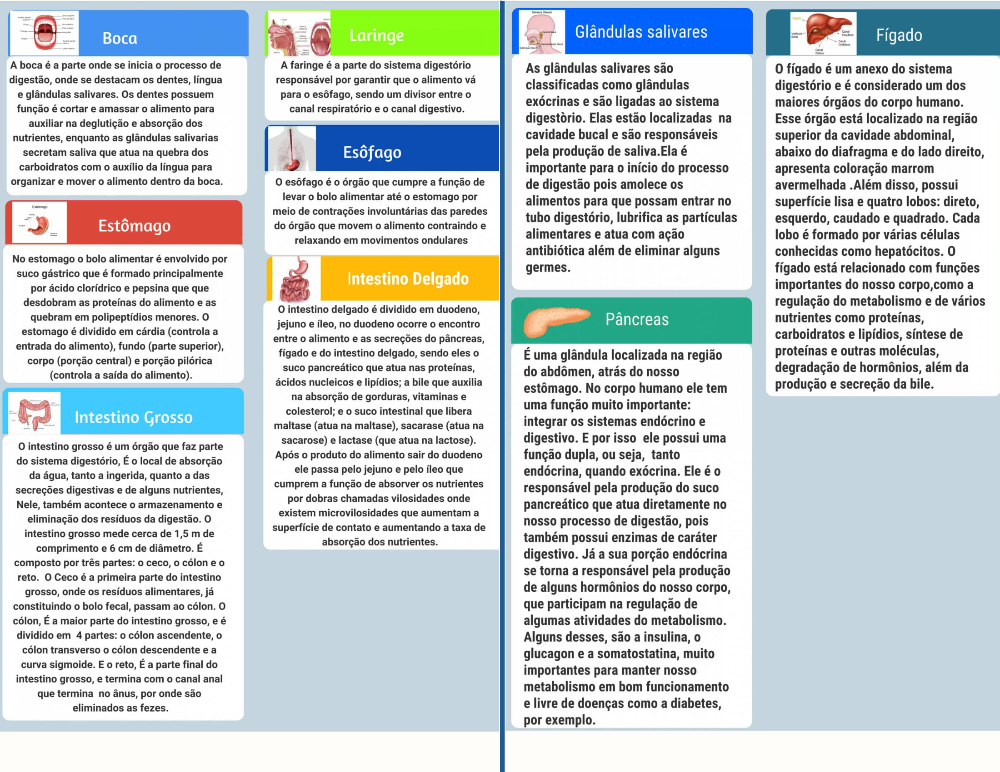
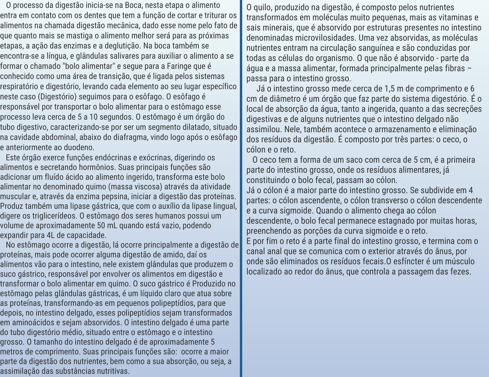
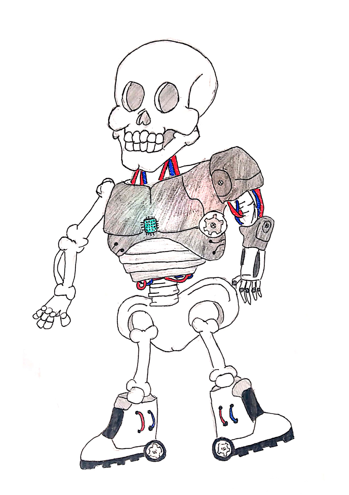
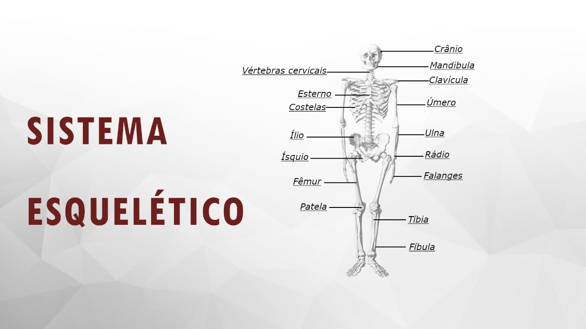

Sistema Digestório - Panfleto
 Sistema Esquelético - Desenho
Sistema Esquelético - Imagem explicativa
Sistema Respiratório - Matéria
COVID-19 ATACA O SISTEMA RESPIRATÓRIO
Pessoas devem manter hábitos de higiene mais rígidos regularmente, em qualquer lugar.
Seres humanos estão sujeitos a contrair qualquer doença, dentre elas, as respiratórias. Como por exemplo: Pneumonia, sinusite, tuberculose, gripe, COVID-19, entre outras. Principais responsáveis dessas doenças são vírus que através de gotículas respiratórias são transmitidos, principalmente em lugares fechados quando a imunidade está baixa.
O coronavírus entra nos pulmões pela contaminação aérea, ocasionando uma inflamação, que pode chegar em até casos graves de pneumonia, e até a morte.Durante a infecção, há um aumento na produção de muco, ocorre a obstrução das pequenas vias aéreas e surgem lesões nos pulmões. O corpo humano responde à invasão do novo coronavírus e, neste processo, surge a falta de ar.
Temos vacinas sendo feitas mas não disponível para todos nos no momento.É de extrema importância apostar nas medidas de prevenção para evitar prejuízos aos pulmões e ao sistema respiratório.Usar máscaras ao sair na rua, álcool em gel, água e sabão para higienizar as mãos e cobrir a boca ao espirrar com o braço e distanciamento social são alguns exemplos de atitudes fundamentais para reduzir a transmissão do vírus causador da COVID-19.
Sistema Cardiovascular - Texto
A trágica jornada do oxigênio no país do sangue
- Onde estou? Pelo que posso ver é um lugar cavernoso, algo me puxou para cá. De repente me encontrei sendo levado a caminho de um lugar chamado alvéolo, um lugar com paredes muito delgadas, era um lugar realmente estranho, comecei a ficar com medo. Logo a frente avisto um rio vermelho, cujo tal estava cheio de barquinhos, como o pessoal que estava ao meu lado começou a pular nesses barquinhos, pensei que seria uma boa ideia. Logo pergunto para a pessoa ao lado:
- Que rio é esse? Onde ele nos levará?
A pessoa me respondeu:
- Esse rio se chama artéria e nos levará ao reino central.
Confuso, mas já sabendo qual a situação eu pergunto:
- Mas o que faremos ao chegar lá?
Já nervoso com tantas perguntas a pessoa me respondeu:
- Chegando lá você verá!
E assim começou minha jornada! Olhando ao redor vejo pessoas de diferentes fisionomias e percebo que estou embarcado em uma pessoa! Vejo soldados usando um uniforme branco e estão sempre fazendo cara de mal, vejo também pequenos funcionários que fazem manutenção em vazamentos no rio. Olho para baixo e vejo que o bote possui corpo arredondado e é muito confortável.
Depois de um longo caminho e muitos obstáculos, avisto a central cuja a pessoa se referia, logo fica claro que a central irá nos redirecionar para vários locais diferentes, o medo começa a surgir, pois não sei o que me aguarda. Entrando nos portões da central pergunto a um dos guardas:
- Para onde seremos levados?
O guarda com muita pressa fala:
- Você e os outros serão encaminhados para vários setores dessa enorme rede de rios para ajudar algumas células.
Em questão de segundo somos levados a uma espécie de câmara e rapidamente essa câmara nos impulsiona para um outro rio. Mais um longo caminho pela frente, dessa vez nos deparamos com um obstáculo amarelado enorme pela frente e quase fomos impedidos de passar. Chegando ao nosso destino, vejo que o rio vai se estreitando e pergunto para um dos pequenos funcionários ao lodo:
- Que lugar é esse? A propósito, o que você é?
Ele com calma e educação me responde:
- Prazer, me chamo plaqueta! Nós estamos no setor de apoio ao braço, no caso essa estrutura gigante que possui vários componentes! Posso dizer vocês são de extrema importância para todos os setores.
Ainda confuso, pergunto a ele:
- Mas senhor, como podemos ajudar se somos tão pequenos? Com uma feição de tristeza e fazendo um gesto saudação ele me disse:
- Para tal feito, vocês serão transformados em energia, mas para isso suas vidas serão sacrificadas...
Um sentimento de pânico se alastrou por meu corpo e incontrolavelmente comecei a chorar. Agradeci a plaqueta e voltei a observar ao meu redor. Percebi que logo à frente o córrego acabava em um penhasco que dava em uma estrutura cheia de fibras onde as pessoas iguais a mim eram jogadas. Como eu não havia feito nada de bom na minha vida, aceitei que poderia ajudar em alguma coisa grandiosa dando minha vida em troca. Com medo, mas aliviado, fechei meus olhos e esperei pela minha vez, ao chegar à beira do penhasco, gritei:
- Não estou a muito tempo aqui e sei de meu trágico destino, mas fico feliz em ajudar alguém mesmo não sabendo de quem se trata...
Os guardas em sinal de homenagem a todos os que foram mortos, bateram continência.